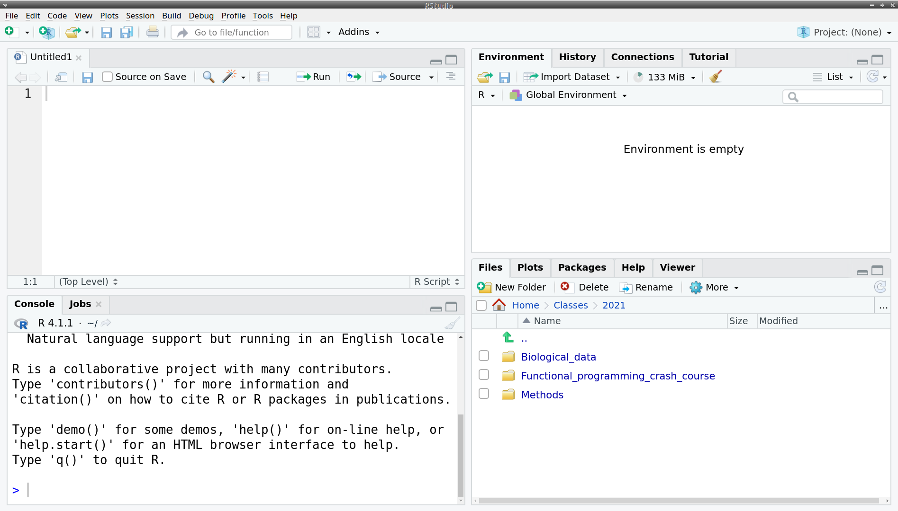
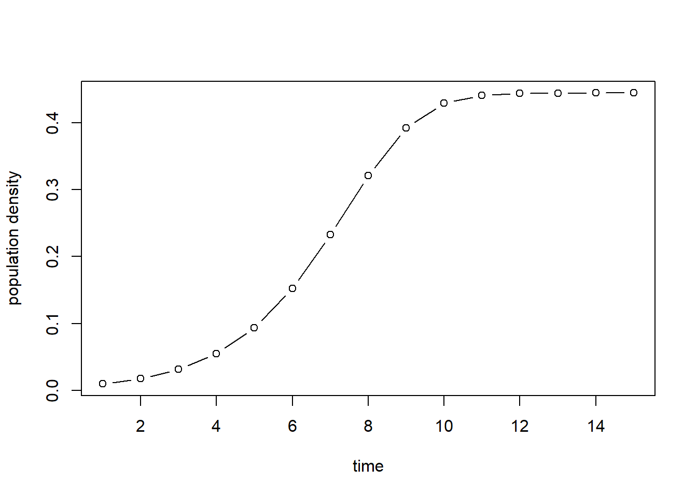

> 2 + 2
[1] 4
>1 Introduction to R and RStudio
1.1 Overview
This chapter introduces R and RStudio. R is a free and open-source programming language for statistics, graphing, and modeling, originally developed by statisticians. In recent years, R has become extremely popular among biologists, and you will almost certainly encounter it as part of real-world research projects. In this book we will be learning some of the ways in which R can be used for efficient data analysis and visualization.
RStudio is an “integrated development environment” (IDE) for R, which means it is a software application that lets you write, run, and interact graphically with programs. RStudio integrates a text editor, the R console (where you run R commands), package management, plotting, help, and more.
1.2 Installing R and RStudio
You can download the most up-to-date R distribution for free here:
Run the installer as directed and you should be set to go. We will not interact with the installed R application directly, but the R software components you install will be used by RStudio under the hood.
To install RStudio on your computer, download it from here:
https://www.rstudio.com/products/rstudio/download/
On a Mac, open the downloaded disk image and drag the RStudio application into your Applications folder. On Windows, run the installer you downloaded.
1.3 Getting Around RStudio
RStudio should be available in the usual places: the Applications folder (on a Mac) or the Start menu (on Windows). When you start it up, you will see four sections of the screen. The most important items found in each are:
- Upper-left: an area for viewing and editing text files
- Lower-left: Console, where you send commands to R
- Upper-right: Environment, for loading, saving, and examining data
- Lower-right:
- Files: a list of files in the “working directory” (more on this later)
- Plots: where the plots (graphs) you draw show up
- Packages: an area for managing installed R packages
- Help: access to all the official documentation for R

1.3.1 A Simple Calculation
Even if you don’t know R, you can start by typing some simple calculations into the console. The > symbol indicates that R is waiting for you to type something. Click on the console, type 2 + 2, and hit Enter (or Return on a Mac). You should see that R produces the right answer:
Now, press the Up arrow on the keyboard. You will notice that the 2 + 2 you typed before shows up. You can use the Up and Down arrows to go back and forth through past commands you have typed, which can save a lot of repetitive typing when you are trying things out. You can change the text in these historical commands: change the 2 to a 3 and press Enter (Return, on a Mac) again:
> 2 + 3
[1] 5
>(The [1] at the beginning of the result just means that the following number is at position 1 of a vector. In this case, the vector only has one element, but when R needs to print out a long vector, it splits it into multiple lines tells you at the beginning of each line what position you are at.)
In case you press Enter/Return before completing a calculation, the prompt symbol > changes to a + (which looks like an addition symbol but does not actually represent addition or any other operation). This lets you know that R is awaiting the completion of an expression instead of fresh input. For example, if we multiply 2 with 3 but press Enter after the multiplication symbol, we see this:
> 2 *
+You now have two options. First, you can press the Escape key to cancel the current calculation altogether. In that case, the prompt will return to being >, and the fact that you wanted to multiply 2 with something is forgotten. Otherwise, you can complete the formula and simply enter 3, which will then be interpreted as the continuation of 2 *:
> 2 *
+ 3
[1] 6
>The result, 6, is now displayed in the console, and the new prompt > beneath means that the console is ready for a fresh input.
Before going deeper into R programming, we need to discuss a few things to enable you to get around R and RStudio more easily.
1.3.2 Writing R scripts
The upper left part of RStudio is a simple text editor where you can write R code. But, instead of having to enter it one line at a time as we did in the console above, you can string long sequences of R instructions together that build on one another. You can save such a text file (Ctrl-S on Windows; Cmd-S on a Mac), giving it an appropriate name. It is then known as an R script, a text file containing R code that can be run from within R.
As an example, enter the following code. Do not worry about how or why it works just yet. It is a simple simulation and visualization of regulated (logistic) population growth:
time <- 1:15
growthFun <- function(x, y, lambda = 1.8) lambda * x * (1 - x)
pop <- Reduce(growthFun, rep(0.01, times = length(time)), accumulate = TRUE)
plot(time, pop, xlab = "time", ylab = "population density", type = "b")After having typed this, highlight all lines. You can do this either with a mouse, or by pressing Ctrl-A on Windows / Cmd-A on a Mac, or by using the arrow keys while holding the Shift key down. Then, to send these instructions to R for processing, press Ctrl-Enter (Cmd-Return on a Mac). If all went well, the lower right screen section should have jumped to the Plots panel, showing the following graph:

1.3.3 Setting the Working Directory
When you ask R to run a program or load data from a file, it needs to know where to find the file. Unless you specify the complete path to the file on your machine, it assumes that file names are relative to what is called the “working directory”.
The first thing you should do when starting a project is to create a directory (folder) on your computer to store all the files related to the project, and then tell R to set the working directory to that location.
The R function setwd("/path/to/directory") is used to set the working directory, where you substitute in the actual path and directory name in place of path/to/directory. In turn, getwd() tells you what the current working directory is. The path can be found using File Explorer on a Windows PC, but you will need to change backslashes to forward slashes (\ to /). On a Mac, you can find the path by selecting a folder and choosing File > Get Info (the path is under “Where:”).
There is also a convenient graphical way to set the working directory in RStudio. In the Files panel, you can navigate around the computer’s file space. You can do this either in the panel itself, or using the ellipsis (…) to bring up the system-standard file browser. Looking around there does not immediately set the working directory, but you can set it by clicking the “Session” menu point at the top menu bar, hovering over “Set Working Directory” with the mouse, and choosing “To Files Pane Location” from the list of sub-options when they appear.
Warning
It is worth repeating: finding the appropriate directory in the Files panel is not enough. It will not set the working directory automatically. You need to actually click the “Session” menu and then click on “To Files Pane Location” under “Set Working Directory”.
You may have also noticed that you don’t actually need to type getwd(): the RStudio Console panel shows the current working directory below the word “Console”.
1.3.4 Packages
One of the primary reasons ecologists use R is the availability of hundreds of free, user-contributed pieces of software, called packages. Packages are generally created by people who wanted to solve a particular problem for their own research and then realized that other people might find their code useful. Take a moment to browse the packages available on the main R site:
http://cran.r-project.org/web/packages/
To install a package, you take its name, put it in quotes, and put it in between the parentheses of install.packages(). For example, to install the package tidyverse (which we will be relying on later), you type:
install.packages("tidyverse")and press Enter (Return, on a Mac). Note that some packages can take quite a while to install. If you are installing tidyverse for instance, it could take anywhere between five minutes to an hour (!) depending on your computer setup. This is normal, and the good news is that you only need to do this once on a computer. Once the package is installed, it will stick around.
Note
It is possible for the installation of packages to fail. The most common reason is that the package relies on some external software (e.g., curl, ffmpeg, a C++ compiler, etc.) which is not installed on your computer. In such cases, make sure the required software is installed first, then try installing the package again.
To actually use a previously installed package in an R session, you need to load it from your disk directly into the computer’s memory. That can be done like this:
library(tidyverse)Note the lack of quotation marks when loading a package.
RStudio also makes package management a bit easier. In the Packages panel (top line of lower right portion of the screen) you can see a list of all installed packages. You can also load and unload packages simply by checking a checkbox, and you can install new packages using a graphical interface (although you will still need to know the name of the package you want to install).
1.4 Additional Reading
R:
RStudio:
1.5 Exercises
Create a folder named
data-with-Ron your computer and set it as the working directory in R. Make certain that the working directory has indeed been set properly.Use the RStudio file browser to set the working directory somewhere else on your hard drive, and then set it back to the
data-with-Rfolder you created earlier. Make sure it is being set properly at each step.Install an R package called
vegan, usinginstall.packagesas discussed in Section 1.3.4. (Theveganpackage contains various utilities for community ecology.)Load the
veganpackage invokinglibrary(vegan). Afterwards, try unloading and then loading theveganpackage again, using the Packages panel in RStudio this time.Create a simple text file (you can do this via File \(\blacktriangleright\) New File \(\blacktriangleright\) Text File from the main menu bar at the top) and put the following secret message in it:
A cnydm, z fqnrr, zmc z rbnqd Pktr sgqdd shldr sgd rptzqd qnns ne entq Dhuhcdc ax rdudm Pktr ehud shldr dkdudm Ir mhmd rptzqdc zmc mns z ahs lnqd.Now save this file as
message.txtin thedata-with-Rfolder you created earlier.Create a new R script file (File \(\blacktriangleright\) New File \(\blacktriangleright\) R Script) and enter the following:
readLines("message.txt") |> chartr(paste(letters, collapse = ""), paste(c(letters[-1], "a"), collapse = ""), x = _) |> writeLines()Save the file as
read-message.Rin the same folder (data-with-R). Run it and see what happens. If all goes well, it should decipher the message from the previous exercise and print it on your screen. (Hint: if you run into trouble, you might need to set the working directory appropriately.)